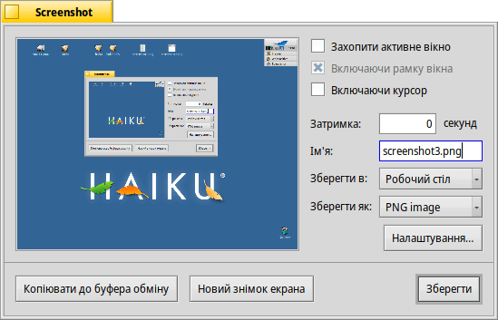

Screenshot (Знімок екрана)
| Deskbar: | ||
| Розташування: | /boot/system/apps/Screenshot /bin/screenshot | |
| Налаштування: | ~/config/settings/screenshot |
Скриншоти створюються при запуску програми Screenshot (Знімок екрана) або при натисканні клавіші PRINT.

На панелі Screenshot (Знімок екрана) можна вибрати чи робити знімок всього екрана чи тільки активного вікна; вирішити чи включати до знімка рамку вікна і курсор миші. Ви також можете встановити затримку перед виконанням знімку.
Нижче потрібно вказати ім'я файлу, місце розташування та формат знімка екрана, які будуть використовуватись при натисканні кнопки . Замість запису на диск, Ви можете обрати кнопку з метою прямої передачі знімка до іншої програми або вибрати кнопку .
Усі настройки будуть збережені до наступного разу, коли Ви будете робити знімок користуючись зручними комбінаціями клавіш:
| зробити скриншот без затримки і запустити панель Screenshot (Знімок екрана). | ||
| SHIFT PRINT | Робить скриншот у тихому режимі (silent), без відкриття панелі, з крайніми настройками, зберігає його у файл. | |
| CTRL PRINT | Робить скриншот у тихому режимі (silent), без відкриття панелі, з крайніми настройками, копіює його до буфера обміну. |
 Створення скриншотів за допомогою програми командного рядка.
Створення скриншотів за допомогою програми командного рядка.
Існує спеціальна програма screenshot для створення знімків екрана, яку можна використовувати з терміналу або сценарію.
Команда
screenshot --help показує нам вже знайомі опції і параметри:
~> screenshot --help screenshot [ОПЦІЇ] [ФАЙЛ] створює растрове зображення поточного екрану ФАЙЛ – необов'язковий параметр «вихідний шлях/ім'я файлу», що використовується у тихому режимі (silent).
Існуючий файл з таким самим іменем буде перезаписаний без попередження.
Якщо ФАЙЛ не вказано, скриншот буде записано з типовим іменем до домашнього каталога користувача «home». ОПЦІЇ -m, --mouse-pointer включаючи курсор -b, --border включаючи рамку вікна -w, --window захоплення активного вікна замість цілого екрану -d, --delay=seconds зробити знімок після встановленої затримки [в секундах] -s, --silent зберігає знімок без показу вікна програми -f, --format=image задає формат зображення для збереження як [bmp], [gif], [jpg], [png], [ppm], [tga], [tif] -c, --clipboard копіювати знімок до системного буферу обміну без показу вікна програми Примітка: ОПЦІЯ -b, --border дає ефект тільки при використанні з опцією -w, --window